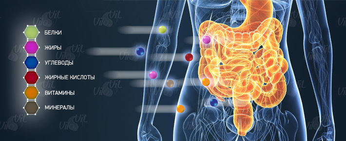
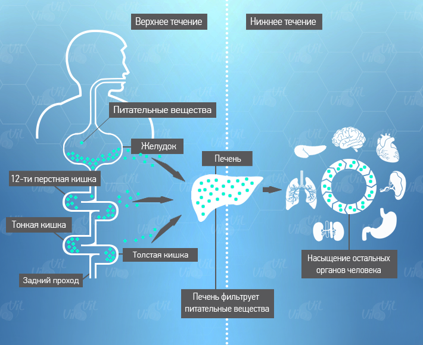
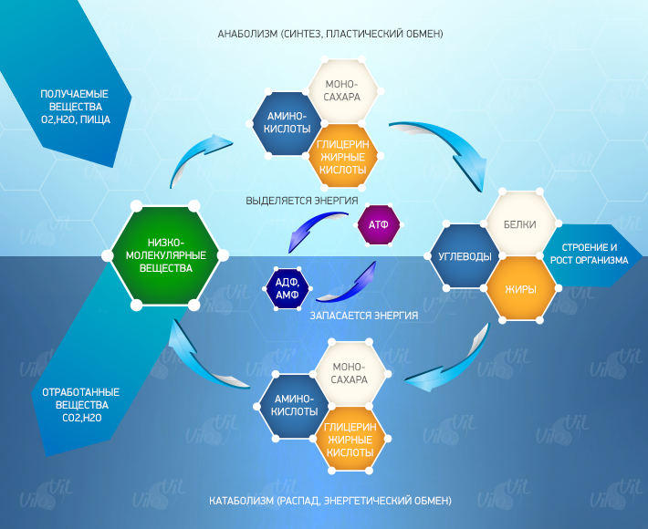
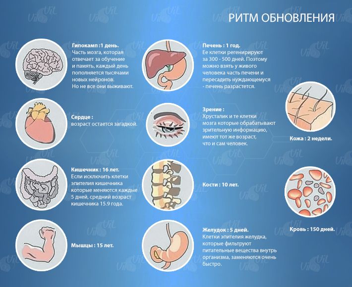

- главная
- пищеварение
+ 7 (495) 64-111-63
info@vilovit.ru
Стержень Виловит® Источник Вашего Долголетия!
Пищеварение
Пищеварением является механическая и химическая обработка пищи в желудочно – кишечном тракте. Данный процесс очень сложный, так как переваривается пища и усваивается клетками. В течение этой процедуры продукты для потребления расщепляется на молекулы, затем вещества всасываются через стенку кишечника и попадают в субстраты человеческого организма (ими являются кровь и лимфа). Следовательно, пищеварение - это переработка продуктов питания и усвоение их нашим организмом. А это значит, что наше здоровье зависит от качества продуктов, которые мы употребляем в пищу и питательных веществ, содержащихся в них.
Мы, взрослые, уверены, что после завершения процесса пищеварения плохой запах естественен для испражнений, но на самом деле это абсолютно не так. Мать, которая кормит грудью ребенка, знает из собственного опыта, если у малыша светлый нетвердый стул с легким неприятным запахом, то она может быть уверена, что он здоров.
С иной стороны, если у малыша «зеленоватый» или «черноватый» стул, у которого зловонный запах, то ребенок раздражен и находится в возбужденном состоянии, а иногда его даже рвет от молока. Отсюда и материнские ночи без сна. Причина возникновения этих неприятно пахнущих испражнений – неправильная ферментация в желудочно – кишечном тракте.
Очень зловонный стул у человека происходит на фоне присутствия в организме отравляющих токсинов. Они - показатели заболеваний. Вызывающие отвратительно пахнущие испражнения вещества – это аммиак, сероводород, фенол, гистамин, индол либо нитрозамин. Все они ядовитые и могут нанести вред организму человека.
| Вещество | Вредность | Определение вещ-ва | Заболевания |
| Сероводород | Сильнодействующее токсичное вещество | Запах тухлого яйца | Повреждение печени, токсин для тканей |
| Аммиак | Сильнодействующее токсичное вещество | Раздражительный запах, присущий общественным туалетам | Повреждение печени, токсин для тканей |
| Гистамин | Гиперчувствительное аллергическое расстройство | При царапине на теле покраснение и припухлость не исчезают долгое время | Аллергический дерматит, крапивница, астма |
| Индол | Токсичное канцерогенное вещество | Запах гнилого лука | Злокачественные заболевания |
| Фенол | Канцерогенное вещество (карболовая кислота) | Запах гуаши | Злокачественные заболевания |
| Нитрозамин | Канцерогенное вещество | Резкий запах | Злокачественные заболевания, поражение печени |
Теория двух течений
Профессор и изобретатель Хидемицу Хаяcи начал изучать свойства водородной воды с 1985 года, а в 1990 году представил общественности свою концепцию «Предпеченочная медицина». Его концепция заключается в том, что процесс доставки питательных веществ происходит по двум течениям в организме – «верхнее течение» и «нижнее течение».
При попадании в желудочно - кишечный тракт, продукты питания перевариваются и стенки кишечника впитывают в себя все полезные вещества. Чтобы попасть в печень, вещества, впитанные стенками кишечника, проходят по «воротным венам». Поступая в печень, эти вещества подвергаются метаболическим процессам, затем последовательно протекают по печеночной вене, далее проходят по нижней полой вене, а затем по циркулярной системе организма, проникают в каждый орган нашего тела.
Получается примерно такая схема переноса питательных веществ: кишечник — печень — печеночная вена - нижняя полая вена — общая циркуляция — органы всего тела.
Если печень возьмем как контролирующая станция, то процесс, который происходит до нее, назовем «верхним течением», а процесс, протекающий после печени - «нижним течением».
Заметим, что когда «верхнее течение» загрязнено вредными веществами, то загрязнено и «нижнее течение». Соответственно, заболевание нижнего течения будет спровоцировано веществами, пришедшими из верхнего течения.
Медицина современного времени – это «медицина», которая смягчает загрязнение нижнего течения и, к сожалению, не воздействует на загрязнение верхнего течения. Это выражение означает следующее: «Причиной отвратных испражнений является ненормальная кишечная ферментация». Вещества, вызывающие заболевания, появились в итоге процесса разложения белка (мясо, рыба, яйца и т.д.), и называют их «метаболики разложения». Разложение некачественных и испортившихся продуктов провоцируются микробами, которые присутствуют в атмосфере, далее этот процесс протекает в пищеварительном тракте с кишечными микробами. Стоит отметить, что все эти отходы являются патогенными, которые имеют свойство вызывать определенные заболевания.
Поэтому очень важно правильно питаться, да и вообще вести правильный образ жизни, тогда не появится отвратительных испражнений. Если контролировать вещества, плывущие по верхнему течению, то это получится. С помощью стержня ВилоВит вода способна нормализовать процесс пищеварения верхнего течения.
Эффективность водородной воды
Водородная вода действует очень эффективно, она блокирует излишки в пищеварительном тракте и косвенно уменьшает количество метаболитов, таких как: сероводород, аммиак, гистамины, индолы, фенолы и скатолы. Если постоянно употреблять водородную воду, то все отработанные вещества и токсины будут полностью выводиться, а значит, не нанесут вреда организму. Благодаря этому стул человека становится чистым. Человек начинает замечать уже после двухнедельного принятия «Живой воды», которая обогащена водородом, что его испражнения изменились в лучшую сторону в сравнении с периодом, предшествующем потреблению водородной воды. Если ранее каловые массы были «черновато - коричневого» цвета и плохо пахли, то теперь они нетвердые, «светло - коричневые», не затрудненные, и без отвратительного запаха.
Обмен питательных веществ
Для любого живого организма основа жизнеспособности – обмен веществ и энергии. В человеческом организме постоянно осуществляется обмен веществ, он не прерывается. В ходе биологического синтеза одни вещества образуются, другие распадаются. Помимо этого постоянно затрачивается энергия на функционирование мышц, внутренних органов, на биосинтез белковых молекул, гормонов, ферментов, а также на образование клетки.
Наш организм получает уже готовые вещества с пищевыми продуктами. Но для включения всех этих соединений потребуется включить обмен, так как они должны быть расщеплены на элементарные частицы.
Обмен веществ это совокупность химических реакций, обеспечивающих организм веществами и энергией, которые необходимы для жизнедеятельности.
Этот процесс имеет вторую терминологию – метаболизм. Его разделяют на два типа: катаболизм и анаболизм. Катаболизм расщепляет сложные органические соединения, попадающие в организм, делая из них более простые вещества. Анаболизм поддерживает процесс обновления и роста новых тканей организма.
Можно сказать, что любое заболевание приводит к дисбалансу обмена веществ. За регуляцию его отвечает нервная система человека. Нередко такие нарушения бывают из – за изменений функционирования щитовидной железы, гипофиза, половых желез (особенно у женщин) либо надпочечников. Очень часто проблемы с метаболизмом возникают по простой причине – неправильный режим питания.
Факторы, являющиеся причиной нарушения обмена веществ:
- Переизбыток углеводов и сахара в крови.
- Лишняя масса тела: у жировой ткани намного меньше интенсивность обмена веществ, чем у мышц и тканей.
- Недостаточное содержание белка в организме, особенно в мышечных тканях, имеющих максимальный обмен веществ.
- Дефицит минералов и витаминов, которые входят в состав ферментов, способствующих ускорению реакции.
- Недостаток воды – именно в водной среде протекают все обменные процессы.
- Малоподвижность.
В итоге метаболической деятельности в организме человека образуются токсичные вещества, которые поступают в кровь. Чтобы не произошло отравления организма их необходимо устранить – вывести из организма. Функцию вывода вредных веществ выполняют почки, они направляют токсины в мочевой пузырь, после чего они выводятся из организма. В процессе метаболизма участвуют и другие органы: печень, поджелудочная железа, желчный пузырь, кишечник, потовые железы.
Водородная вода в обмене веществ
Все мы знаем, что вода – это важнейший участник метаболизма в организме человека. Она является главным субстратом для обмена веществ между клетками и способствует вовлечению в него жиров. Дефицит воды значительно замедляет процесс обмен веществ, так как в этом случае печени приходится восстанавливать запасы жидкости в организме, а не сжигать жиры.
Любой организм способен существовать, только если происходит постоянный приток питательных веществ из внешней среды и выделения продуктов жизнедеятельности. Каждая клетка нашего организма периодически самообновляется за счет питательных веществ, которые приносит кровь. И только если правильно питаться, можно поддерживать энергетический и биологический обмен с окружающей средой.
Организм человека — великолепная самообновляющаяся система, но даже она, не может нормально функционировать не имея нужных материалов и веществ. С помощью водорода процесс регенерации и роста клеток нормализуется, вследствие чего происходит активное обновление организма. У организма появляется резерв и внутренние силы на борьбу с недугами.
«Живая вода», насыщенная водородом, быстро усваивается организмом, что способствует моментальному вливанию в процесс обмена веществ. Благодаря водороду энергия сохраняется в больших количествах, которая в будущем может использоваться для других важных процессов.
Водород в организме оптимизирует водный баланс, что позволяет доставлять питательные вещества по всему организму, а следовательно процесс обновления и роста тканей и клеток не нарушается. Водород способен создавать водородную связь белков, нуклеиновых кислот, липидов, углеводов, что так же приводит к регенерации и росту последних.
Прием водородной воды с Виловит налаживает пищеварение, нормализует обмен питательных веществ, активно выводит токсины, сохраняет клеточную воду, предотвращает окисление клеток и способствует регенерации тканей и клеток, в результате чего наш организм функционирует должным образом.